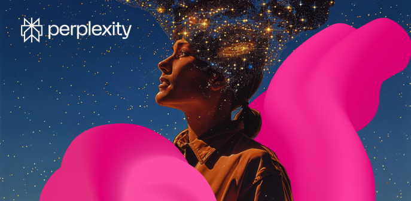

Perplexity Pro ab sofort über Magenta Moments verfügbar!
Magenta Kund:innen können sich ihren einjährigen Gratis-Zugang im Wert von 200 Euro in der Mein Magenta App holen. Die Pro-Version bietet Zusatzoptionen wie etwa den Zugriff auf weitere KI-Modelle oder die Möglichkeit, unbegrenzt Dateien für Analysen hochzuladen.
Wer nutzt schon Perplexitiy?
Was sind eure Erfahrungen damit?
Wie gefällt das KI-Tool?
Liebe Grüße, JD. 🌻